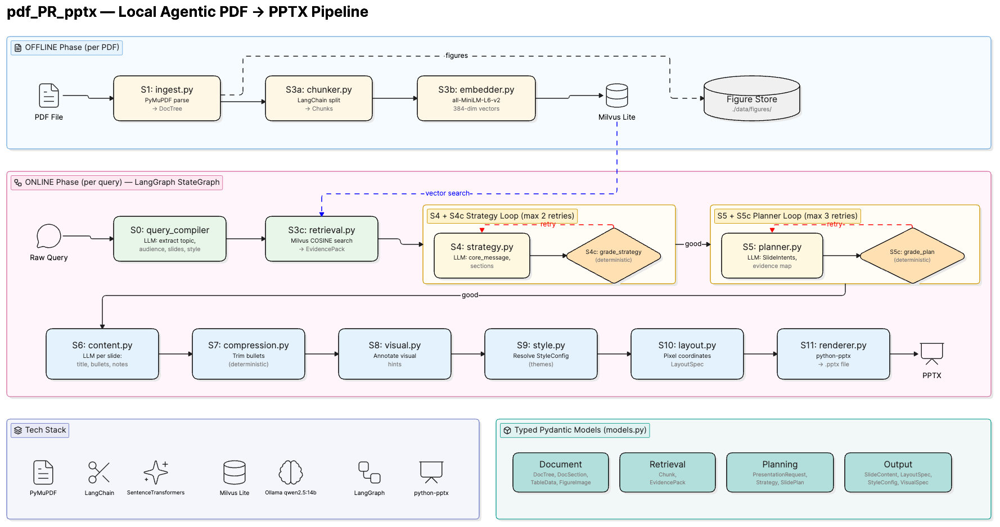

01 Demo
Two commands — one to ingest, one to generate.
Output is a styled .pptx with titles, bullets, speaker notes, and a takeaway bar per slide. Built during an internship at Unicloud as a production-grade document intelligence system.
02 Architecture
Two separate paths keep ingestion and generation cleanly isolated.
The planner and strategy nodes each run inside a conditional retry loop — if the critic detects a schema violation, the agent re-retrieves missing evidence and replans. Critics are deterministic Python, so no extra LLM calls at validation time.

Typed artifact chain
Every stage boundary is a validated Pydantic model — no raw strings passed between stages:
→ PresentationRequest
→ EvidencePack
→ Strategy
→ SlidePlan
→ list[SlideContent]
→ StyleConfig
→ .pptx
03 Stack
Everything runs locally. No OpenAI, no Anthropic, no external APIs.
04 Project Structure
├── main.py # CLI entry point (offline + online modes)
├── config.yaml # model names, chunk params, retrieval settings
├── requirements.txt
└── src/
├── models.py # all Pydantic artifact definitions
├── utils.py # shared LLM caller, JSON parser, logger
├── ingest.py # S1 — PDF → DocTree
├── chunker.py # S3a — DocTree → list[Chunk]
├── embedder.py # S3b — list[Chunk] → Milvus
├── retrieval.py # S3c — query → EvidencePack
├── query_compiler.py # S0 — raw string → PresentationRequest
├── strategy.py # S4 — PresentationStrategy (LLM)
├── planner.py # S5 — SlidePlan (LLM)
├── content.py # S6 — SlideContent (LLM)
├── compression.py # S7 — trim bullets for slide format
├── visual.py # S8 — VisualSpec per slide
├── style.py # S9 — StyleConfig from description
├── layout.py # S10 — LayoutSpec (deterministic)
├── renderer.py # S11 — python-pptx → .pptx
└── agent.py # LangGraph StateGraph wiring
05 Setup
Requires Python 3.11, Conda (recommended), and Ollama running locally.
Install
Verify
06 Usage
Ingest a PDF
Parses, chunks, embeds, and stores the document in ./data/milvus.db. Run once per document. The doc_id is the filename stem.
Generate a presentation
Style keywords
07 Configuration
All tuneable parameters live in config.yaml.
model: qwen2.5:14b
base_url: http://localhost:11434/api/chat
timeout: 120
embedding:
model: all-MiniLM-L6-v2
device: mps # cpu if not on Apple Silicon
retrieval:
top_k: 15
min_evidence: 3
chunking:
chunk_size: 512
overlap: 64
agent:
max_plan_retries: 3
max_content_retries: 2
08 Roadmap
09 Design Principles
Every stage produces a Pydantic model. No raw strings between stages. Enables caching, partial regeneration, and model swapping.
Slide count, audience, and style are extracted at S0 and enforced mechanically downstream — not passed as vague prompt instructions.
Ingestion happens once per document. Query-time work starts at retrieval. These paths never mix.
The plan critic is deterministic Python. LLM critic calls happen only when schema validation fails, keeping latency low.